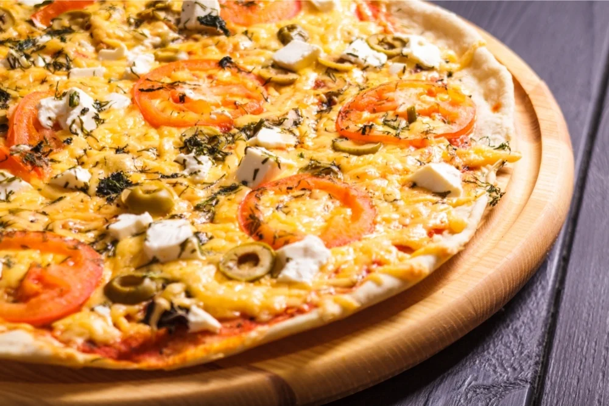

Neapolitan Pizza

When it comes to pizza, the Neapolitan has to be the first featured, especially given that it was the first type of pizza created. This is the authentic Italian style pizza.This pizza dates back to 1889, when Queen Margherita...
New York Pizza

New York-Style Pizza became popular at the start of the 1900s, and it has remained a firm favorite, not just in New York, but across the globe too. While it is similar to a Neapolitan in the sense that it is a thin . .....
Chicago Pizza

If you enjoy deep pan pizzas, you need to try Chicago pizzas. These pizzas are far different to the traditional Italian styles, and a lot smaller too.This deep dish pizza originates from Chicago in around the 1900s. ...
Greek Pizza
If you enjoy deep pan pizzas, you need to try Chicago pizzas. These pizzas are far different to the traditional Italian styles, and a lot smaller too.This deep dish pizza originates from Chicago in around the 1900s. ...